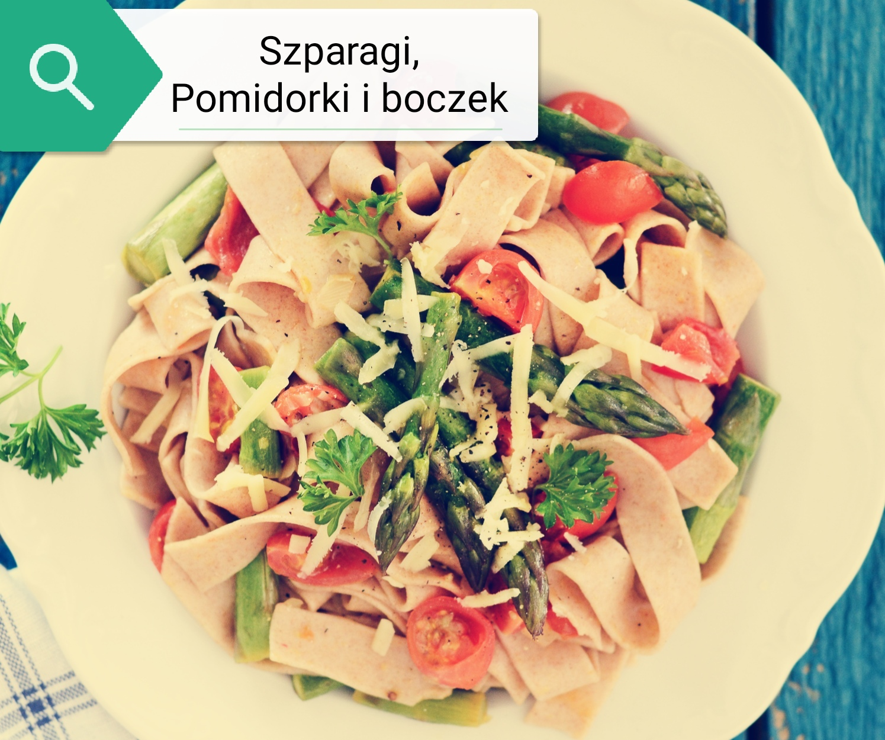

Makaron z kurczakiem i szpinakiem z suszonymi pomidorami i
czosnkiem
- porcje: 6
- czas przygotowania: 30 min
- koszt: średni
- składniki:
- 200 ml śmietanki 30%,
- 400g kurczaka,
- szpinak mrożony rozdrobniony,
- 4 ząbki czosnku,
- sok z ćwiartki cytryny,
- pomidory suszone w oleju,
- sól i pieprz,
- ugotowany makaron,
- łyżka oleju.
przygotowanie
Kurczaka pokroić na drobną kostkę, doprawić i podsmażyć na
patelni. Zdjąć z patelni i rozgrzać ją znowu. Na patelnię wrzucić
mrożony szpinak doprawić solą i pieprzem, dodać rozdrobniony
czosnek i sok z cytryny. Pomidory pokroić na małe kawałeczki i
dorzucić do szpinaku. W międzyczasie ugotować makaron, a gotującą
się z niego wodą podlewać szpinak. Do szpinaku dodać całą
śmietankę, kurczaka i makaron. Całość wymieszać i podawać.
Makaron z tuńczykiem i marchewką
- porcje: 2
- czas przygotowania: 15 min
- koszt: mały
- składniki:
- puszka tuńczyka w sosie własnym,
- marchewka,
- 25g masła,
- 2 ząbki czosnku,
- sól i pieprz,
- ugotowany makaron,
- łyżka oleju.
przygotowanie
Na rozgrzaną patelnię z łyżką oleju wrzucić marchewkę startą na
grubych oczkach. Do tego dodać odsączonego tuńczyka i rozdrobniony
czosnek. Doprawić do smaku solą i pieprzem. Ugotować makaron i
podawać.
Makaron a’la kala
- porcje: 4
- czas przygotowania: 45 min
- koszt: duży

- składniki:
- szparagi zielone,
- pomidorki koktajlowe,
- boczek,
- 250 ml śmietanki 30%,
- sól,
- czosnek granulowany,
- ugotowany makaron,
- łyżka oleju.
przygotowanie
szparagi obrać ze skórki, odciąć centymetr na końcu. Pokroić pod
kątem na małe kawałki. Boczek w kawałkach podsmażyć na patelni, na
średnim ogniu. Do boczku dorzucić szparagi i poddusić chwilę. Na
koniec dodać pomidorki koktajlowe przecięte na pół, przyprawy i
podsmażyć 2 minuty. Zalać śmietanką, wymieszać z makaronem i
podawać.